SLIDE：把离线物品搜索蒸馏为单轨迹列表生成
SLIDE 研究如何让生成式检索模型直接生成一份有序候选列表，而不在在线阶段依靠多条物品级搜索路径。第一作者 Tianyu Zhan 来自浙江大学，工作完成于阿里巴巴实习期间，合作作者主要来自淘天集团；Gui Ling 为共同第一作者。论文于 2026 年 10 月 26 日公开，唯一入口为 SLIDE: Search-to-List Item Distillation for Single-Rollout Generative Retrieval。本次于 2026 年 10 月 28 日核验，未核验到本文独立代码或项目入口。页面中的会议名称、2018 年版权与 DOI 占位符属于模板，不能据此认定会议接收。
物品级 beam search 不显式建模候选之间的依赖，也难以直接优化整份列表；但把列表作为监督后直接贪心解码，又会因搜索范围较窄和稀疏正样本的位置偏置而明显落后。怎样把离线多路径搜索找到的候选与顺序，转化为学生能够沿一条轨迹学会的检索决策？
1. 背景和问题
语义标识符生成式检索把每个物品映射为固定长度的离散 token 序列。模型读取查询、用户历史和请求特征，输出某个物品的语义码，再由码到物品的映射得到推荐或搜索候选。它把原先的向量近邻搜索换成了条件序列建模，能够共享语义前缀，并让模型直接学习上下文到物品的关系。不过，部署时需要的是多个候选，而训练常常只告诉模型某个请求下哪个物品发生了点击或转化。如何从一个目标分布得到一份高质量列表，仍然是独立问题。
常见做法是对每个物品独立训练，在推理时维护多个语义码前缀，通过 beam search 逐层扩展并选出候选。这里的每条路径代表一个物品，候选之间只是在同一请求条件下竞争概率，并不把已经选出的物品显式作为后续候选的条件。因此，得到第一项后再得到第二项，并不是一个“已选择第一项，因此下一项应该补充什么”的过程。针对整份列表的覆盖、多样性或位置价值，若仍只用物品级奖励，监督与最后部署输出之间会存在粒度差异。
列表级建模提供了另一种表达：把多个物品的语义码连接起来，让模型依次输出整份列表。后续物品能看到前面的物品，训练目标也可以覆盖不同位置。这个结构为列表约束留下了接口，但并不自动获得 beam search 的探索能力。贪心解码每一步只取当前概率最大的 token；一个局部最优前缀未必对应最好的完整物品，更不保证后面的候选仍然相关。直接把训练样本改成列表，不等于把多路径检索所发现的知识交给模型。
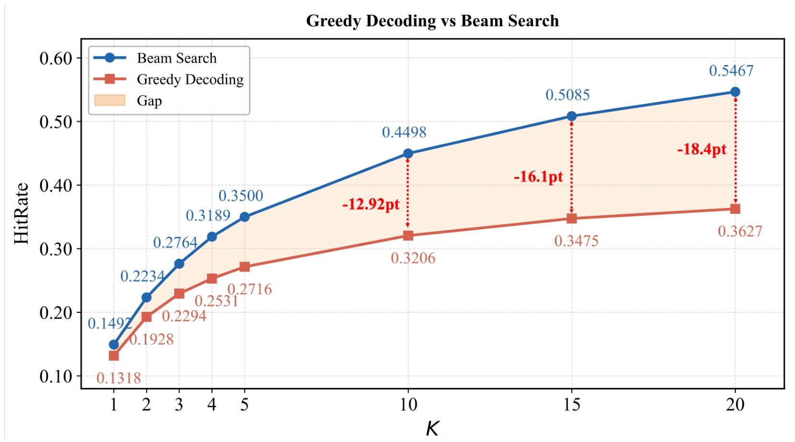
Figure 1 固定同一个直接训练的列表模型，在淘宝搜索上比较两种解码方式，横轴为候选截断深度，纵轴为命中率。蓝线的 beam search 在首位就领先，说明多路径探索确实能找到贪心首条路径漏掉的高概率物品；随着截断变深，橙线增长更慢，差距扩大。图中不仅存在“第一项没有选好”的问题，后续位置也未充分吸收相关物品监督。这使作者把原因分成搜索空间和位置监督两部分，而不将全部缺口归结为模型容量。
图上深度二十的标注为十八点四个百分点，引言却使用百分号；图示蓝线端点与主结果表也有轻微差异。因此这里保留其诊断作用，后文的精确主结果以 Table 2 为准，不把图上的差距再包装成严格一致的相对提升。更重要的是，两条曲线来自同一模型，这说明训练后模型内部已经存在部分可被搜索利用的相关性，只是单条贪心轨迹无法完整提取。蒸馏的目标因而不仅是缩小模型，还包括把一种昂贵解码过程的收益转移到另一种输出路径。
另一项困难来自真实行为监督。转化最稀疏，点击次之，曝光未点击更多。若按行为重要程度把转化物品置前，模型可能逐渐把列表早期位置与稀少强正例绑定，把后期位置与较弱标签绑定。虽然列表总长度增加了，后续位置却未必学会持续寻找相关物品。作者据此认为，需要在不同位置都提供由教师检索出来的候选，而不仅重复原始观测列表。这个论点不意味着曝光或精排标签没有偏差；它只是指出这些标签提供的相关性模式可以被教师扩展为更广的监督集合。
教师搜索的范围也需要谨慎理解。原始行为标签来自被展示过的物品，精排列表来自上游召回筛出的物品，都受既有系统的候选选择与曝光机制影响。教师在语义码输出空间中执行搜索，能够提出没有出现在当前请求原始标签里的物品。因此新目标不再局限于原始观测子集。但是，新增候选仍然由同一监督训练出的教师选择；本文并没有用随机曝光或因果校正证明这些候选是真正无偏的用户偏好。扩大教师可检索空间和消除数据偏差是不同命题。
SLIDE 的具体设计是把教师针对每个训练请求离线搜索到的物品，按搜索得分顺序串成一条训练序列。学生学习的是这份序列的硬目标，而不必在每次学生更新时调用教师或匹配全部词表软分布。这将搜索成本放在训练数据构造阶段，并让在线学生维持较小尺寸。它没有承诺离线成本消失，也没有把原先多个物品路径真正合并成一次神经网络前向；在线仍然需要依次生成构成列表的 token。
对于推荐研究，本文最有价值的切入点是区分三个对象：教师怎样得到高质量候选集合，候选怎样被组织成有序列表，以及学生能否沿连续轨迹生成这些候选。三者分别对应监督质量、序列目标和模型学习能力。只观察最终命中率，很容易把更强教师、更多训练轮数和新的解码结构混在一起。后面的分析因此分别改变教师来源、目标长度、目标顺序、教师容量、学生容量与优化轮数，让每个因素有相对独立的证据。
阅读范围也应与作者局限保持一致。论文主要为直接列表生成建立基础，实验强调小截断深度的命中表现；它没有证明可以在真实服务延迟约束下替代所有大规模候选生成与后续排序链路。返回一份更长列表，或在固定学生参数下追平某个 beam 基线，只能支持特定设置下的检索质量结论。若要用于生产召回，还必须补充有效唯一候选数量、全链路耗时、目录更新与多请求批处理等评价。
对指标的理解也决定问题是否被正确提出。小截断命中强调靠前物品，较深截断强调覆盖，排序折损指标还关注同一集合内部的顺序。生成更多有效候选可能改善较深命中，却不保证首位或整份列表排序更好；本文正是通过多种截断与重排对照来拆开这些效果。
2. 方法
2.1 教师训练：用精排列表构造初始检索分布
设请求上下文为 $x$，物品以长度为 $L$ 的语义码表示。点级训练和列表级训练都使用自回归 token 预测，但它们对物品之间的条件关系有不同约束：点级目标里的每个物品只依赖请求，列表目标则依赖之前的目标物品。两个训练方式可以写为一组对照公式。
符号解释：$i_m$ 为第 $m$ 个目标物品，$i_{<m}$ 为此前物品的语义码序列，$w_m$ 为可选监督权重，$\theta$ 为模型参数。两式差别在于跨物品的条件上下文，而不是物品内部是否自回归。本文比较后认为两种训练在相同标签下的 beam 检索质量接近，因此选择能同时支持列表输出与物品搜索的列表级教师。
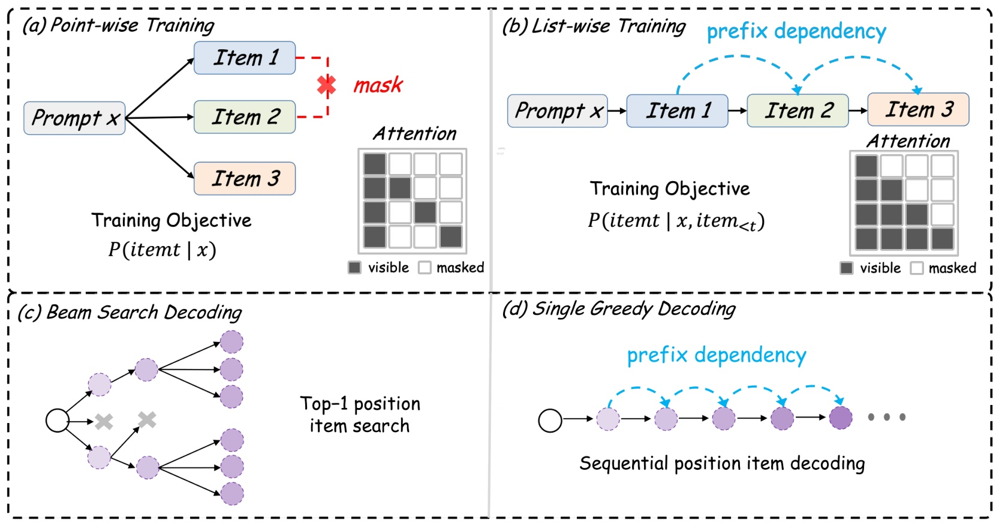
Figure 2 的上半部分对照点级与列表级训练，左侧多个物品分别接收请求，右侧物品通过蓝色前缀依赖连接。注意力示意说明列表学习会保留前序物品信息，而点级监督不包含这一跨目标依赖。下半部分则把多分支的物品 beam search 与单路径的列表贪心生成分开画出。上半部分决定模型在什么条件下接受标签，下半部分决定部署时怎样利用模型分布；它们不是只能一一配对的两套完整系统。列表训练出的模型仍然可以只用第一物品位置进行 beam 搜索，这正是本文教师的选择。
图中 beam 的每条叶路径都从同一请求出发，不依赖其他已检索物品；贪心列表则将前面物品纳入后续 token 的上下文。因而单路径虽然减少了同时维护的搜索分支，却延长了跨物品的顺序依赖。学生需要学会在已经生成若干候选后继续给出下一项，不能只学第一项的概率。图里并没有表示一次前向即可同时输出所有物品，也没有给出两种路径的真实耗时；从结构到服务收益之间还需要实际系统测量。把训练方式、推理方式和计时范围分开，是理解搜索蒸馏的前提。物品级 beam 用完整语义码的累计对数概率评价路径，而不是只比较某一个 token 的概率。
符号解释：$a$ 是一个部分语义码前缀，$a_j$ 是其第 $j$ 个 token，$a_{<j}$ 为前序 token。搜索保留高累计得分的多个前缀，再继续扩展到完整物品；它可能保留贪心当前一步放弃的路径。每条路径表示一个物品，搜索结束后才按分数选出多个候选。淘宝教师目标由十二个物品组成：先放转化物品，再放点击物品，最后放曝光未点击物品，同类内部保留精排顺序。这一正例前置精排列表记为训练数据，教师对所有目标使用相同权重。
符号解释：$N$ 是训练请求数，$\theta_T$ 为教师参数，$i_{n,m}$ 为第 $n$ 个请求的第 $m$ 个目标。正例前置改变的是条件上下文与目标顺序，公式没有再额外放大转化项权重。教师以完整列表训练，但后面的离线 beam 只从第一物品分布出发，因此把正例移到首位恰好强化了搜索直接使用的初始上下文。
2.2 离线搜索与从物品到列表的序列化
教师训练后被冻结，在训练请求上下文上进行物品级 beam 搜索。每个请求产生 $K_d$ 条候选语义码路径，教师与学生共享码本、词表和输入特征，因此无需先把教师文本翻译成另一种学生标签空间。候选按完整路径的教师得分排序。
符号解释：$s^{(k)}$ 为第 $k$ 条候选语义码序列，$L$ 为每个物品的码长，$\ell$ 为码内位置。候选顺序由这个得分决定。各候选路径均只以请求及自身码前缀为条件，并没有把第一个检索物品作为第二个检索物品的条件。跨物品依赖是在学生读取串联目标后才被学习的。
符号解释：$\Vert$ 表示直接拼接，候选编号已经按教师分数降序排列，$\mathrm{EOS}$ 是结束标记。固定码长让模型能够按每 $L$ 个 token 区分物品边界，不另外插入物品分隔符。作者明确说明，此时不做语义码到物品的映射，也不进行有效性过滤；不能把服务阶段的过滤反写成训练数据构造的步骤。
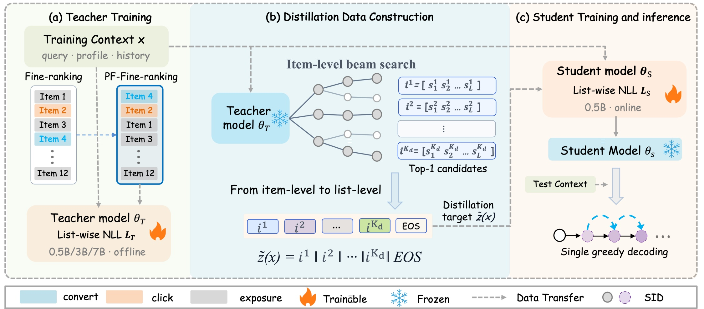
Figure 3 左侧是教师训练，转化、点击和曝光用不同颜色标识，正例前置后得到教师列表目标。中间教师被冻结，对同一请求展开多条独立物品路径，再将这些路径的语义码按分数顺序连接成一个带结束符的列表。右侧学生从硬目标学习下一 token，最后部署时只运行学生的单条贪心轨迹。火焰和雪花分别对应当前阶段可训练与冻结的模型，虚线表示数据转移，不表示教师与学生在线同时运行。图中教师可以从五亿扩至三十亿或七十亿参数，而在线学生保持五亿，因此可以研究不改变部署模型尺寸的教师扩容。
这个转换同时传递候选集合和候选顺序。集合提供原始标签之外的检索覆盖，顺序让不同位置获得稳定的质量层级，并给学生学习下一候选提供上下文。它不是将教师每个搜索分支的概率都压入一个软分布，也不是让学生在推理时重建搜索树。学生得到的只有一条序列，所以教师漏掉的物品、错误排序以及不完整语义码都可能进入硬监督。图中由搜索到列表的箭头因而是知识传递接口，也是误差传递接口；后面的重排和长度实验是在检验这个接口里哪些信息真正有用。
实际迭代成本包含三个阶段。更大教师需要训练，更广 beam 需要为大量训练请求生成目标，学生还要反复读取长序列。图里的在线简单性不能用于推断训练总成本低；目录或码本变化也可能要求重新构造部分目标。本文以相同语义码映射作为直接复用的前提，没有证明目标缓存可以永久不更新。
2.3 学生学习与单轨迹在线解码
构造新数据时保留原请求，只把原始监督列表替换为教师序列。学生从原始预训练 checkpoint 初始化，并非从已训练教师参数接着优化。这样相同尺寸教师与学生也不是同一组权重的简单解码切换，而是先搜索生成监督，再重新训练学生。
符号解释：$\widetilde D$ 是新的蒸馏数据，$\theta_S$ 为学生参数，$t$ 跨越整份语义码列表及结束符。教师强制训练让学生看到目标前缀，所有 token 统一计入负对数似然。教师不再参与学生优化，也不需要逐步词表软分布匹配；但学生训练时的正确前缀与部署时自行生成前缀之间仍有差异，本文没有消除自回归暴露偏差。
符号解释：$\mathcal V$ 是码 token 词表，$\widehat z_{<t}$ 是学生已经生成的序列。模型生成到结束符或长度上限后，每 $L$ 个 token 切为一个语义码，再映射为物品，去除无效或重复候选并保留顺序。一条 rollout 是一条持续扩展的前缀，不是一次 forward。 若目标列表变长，自回归步骤也会增加；实际吞吐还取决于缓存、batch、beam 实现和有效候选比例，论文没有给出完整墙钟对照。
3. 实验结果
3.1 数据、基线与固定部署尺寸的主结果
实验使用公开 FORGE 的 S3 阶段以及内部淘宝搜索数据。淘宝请求按连续十天训练、随后一天测试切分；其训练标签每请求约十二个物品，而 FORGE 保留原始单标签监督。默认学生为 Qwen2.5-0.5B，教师可为同尺寸、3B 或 7B。淘宝采用三级语义码，码本大小为 32768、8192、8192。教师训练一轮，学生默认蒸馏两轮，训练设备为三十二张 NVIDIA H20。离线目标使用宽度日程二十、二十、二十，评价物品搜索使用二十、二十、二百；这两个日程服务不同阶段，不能混写为相同 beam。
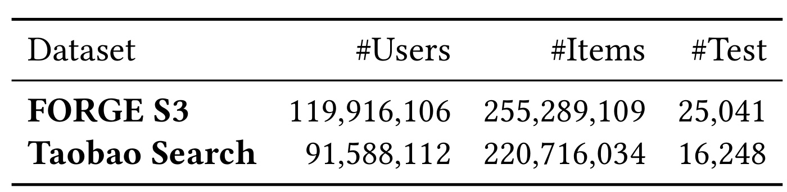
Table 1 的用户数和物品数说明实验覆盖大规模目录，但测试请求数要另看：FORGE 为二万五千零四十一，淘宝搜索为一万六千二百四十八。前者约一亿二千万用户、二亿五千五百万物品，后者约九千一百六十万用户、二亿二千万物品。目录规模不是每个训练请求都遍历全部物品的计算量，也不是测试中每个用户拥有完整偏好标签。作者没有把该表定义为全目录均匀抽样评价，因此不能由目录大推断无曝光偏差。FORGE 的公开切分有助于复现，淘宝数据与精排服务则仍依赖内部资源。
两套数据的原始标签差异也解释了后面的基线强弱。FORGE 每样本只有一个目标，直接训练的贪心列表缺少第二个及以后位置的监督；淘宝原本就有十二项列表，能学到更长输出。将二者的增益平均起来，会掩盖“补上列表监督”和“迁移教师搜索”各自的贡献。表里测试规模与标签语义应共同保留，而不只记住最大物品数。
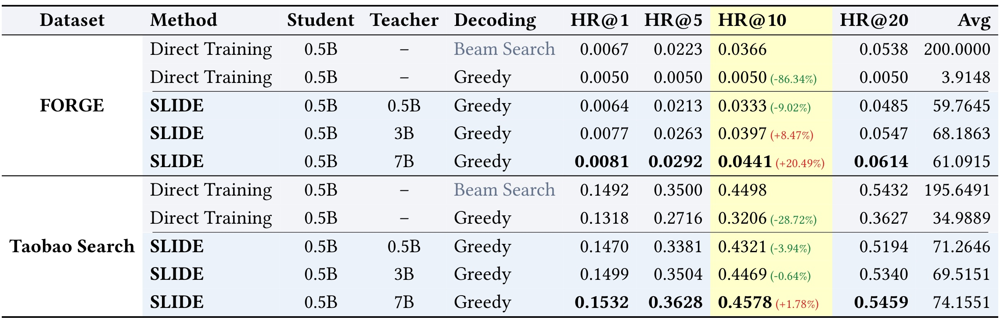
Table 2 中所有在线模型都是五亿参数，教师尺寸只对蒸馏行生效。先看 FORGE：直接训练后 beam 的 HR@10 为零点零三六六，直接贪心只有零点零零五，且不同截断的命中几乎不增长；这与单标签缺少后续监督一致。同尺寸教师蒸馏后，学生贪心 HR@10 达到零点零三三三，大幅改善直接贪心，但仍比 beam 低百分之九点零二。三十亿教师使其达到零点零三九七，相对 beam 高百分之八点四七；七十亿教师达到零点零四四一，相对高百分之二十点四九。这些百分比的分母是同数据的直接训练 beam，并非直接贪心。
淘宝搜索的原始贪心较强，但仍存在差距：HR@10 为零点三二零六，beam 为零点四四九八。同尺寸教师学生达到零点四三二一，仍低百分之三点九四；三十亿教师达到零点四四六九，仍略低百分之零点六四；七十亿教师才以零点四五七八超过 beam 百分之一点七八。教师扩容对两个数据都有效，但不能概括成“任何教师都让贪心超过搜索”。这也使固定部署尺寸的教师扩容具有意义：更高质量监督能传入学生，却没有证据表明搜索知识可以无损压缩。
最右列是合法、去重后的平均候选数量。FORGE 蒸馏学生大致六十至六十八项，淘宝约六十九至七十四项，仍明显少于 beam 约二百项。七十亿教师的学生在小截断表现最好，不等于它已经交付同样多候选。学生在训练二十项目标后可以生成更多项，但平均数量没有随教师容量单调增加，说明输出长度与相关性并非同一维度。若下游排序必须获得固定规模候选，还需评价列表不足、重复、无效码以及深截断质量。本文没有同时报告置信区间、多训练种子或端到端吞吐，点估计差异应按所给协议理解。
3.2 教师监督与目标长度的消融
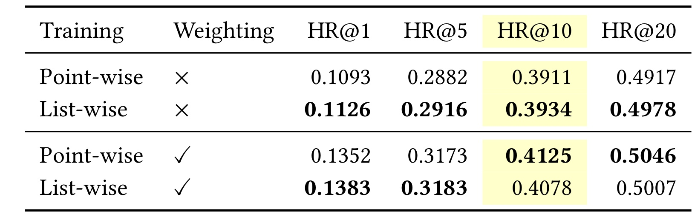
Table 3 要排查的是主基线是否因选择列表训练而过弱。无加权时，点级与列表级 HR@10 分别为零点三九一一和零点三九三四，列表只高零点二三个百分点；HR@1、五、二十也呈小幅差异。加入相同标签加权后，列表在首位和第五位略好，但点级在第十与第二十位更好，例如 HR@10 为零点四一二五，对比列表零点四零七八。这个反例说明列表训练并非所有截断都优于点级，也不能将训练条件扩展本身视为稳定检索增益来源。
该对照支持作者继续用列表教师，因为它没有显示明显削弱搜索参考，同时一个模型可以支持两种解码方式。但“差异不大”来自所报告点估计，没有显著性检验，不能换成严格等价性结论。更重要的是，表中控制了监督标签，故讨论的是训练分解差别；若把它与 Table 2 不同教师尺寸的行直接交叉比较，就同时改变了训练信号、模型容量和目标构造。对复现者而言，应先在自己的标签体系确认点级参考没有被低估，再评价搜索到列表的转换，而不是默认列表训练天然构成更强起点。
这张小表还说明早期与深层检索可能对权重有不同反应。加权后初始上下文中的正例更突出，beam 更容易在前几层找到它，但模型对其他高概率候选的分布也可能变化。作者没有提供足够证据把这些差异完全归因到某种具体注意力机制，最稳妥的解释仍是：在此设置下两种训练都具备较接近的搜索能力，主要收益需要从后续监督重建分析。
这里的加权列也不是两种模型使用不同权重，因而可以在每个加权条件内部比较训练分解；若跨加权条件取最好数字，则又引入了额外训练因素。复现时保留这两个轴，比仅复述“列表和点级相近”更能发现基线设置是否公平。
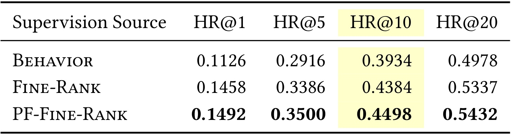
Table 4 固定列表训练与 beam 推理，仅改变教师监督来源。行为序列的 HR@10 为零点三九三四，精排列表提升到零点四三八四，增加四点五个百分点；把正例移到首位后进一步达到零点四四九八，再增加一点一四个百分点。其余截断也同向改善。较丰富的精排候选为教师提供原始行为之外的排序信号，而正例前置让已观测转化在第一物品上下文直接接受监督，与后面只搜索首物品分布的教师用法吻合。
这个消融解释了为什么不能把所有学生收益都称为“蒸馏目标顺序”的功劳。教师本身已经从更丰富的标签受益，学生再学习其输出，所以最终效果同时依赖标签与搜索转换。精排列表来自生产系统，可能综合了现有模型、曝光机制和业务规则；它并不是独立的真实偏好全标注。把曝光未点击项纳入目标也没有在这里被证明具有普遍正确的语义，尤其在不同业务中未点击可能只代表没有看到或暂时不需要。
正例前置在教师训练阶段有效，也不意味着在学生蒸馏目标中再次强行前置一定有效。教师这里需要强化初始分布供物品级搜索利用，学生需要学会连续生成有序列表，两者使用监督的方式不同。附录 Table 8 正是检验这个差别；若只记住正例应该永远排第一，就会把适用于教师搜索的结论过度迁移。表中结果仍然是离线命中，没有衡量精排教师在未来流量上的偏差或相关性校准。
此外，这个表检验的是教师输出分布，还没有涉及学生吸收能力。即使教师搜索变好，学生是否能沿单路径提取相同知识仍需单独测量；主表同尺寸蒸馏未完全追平搜索，已经说明这一步不是自动完成的。
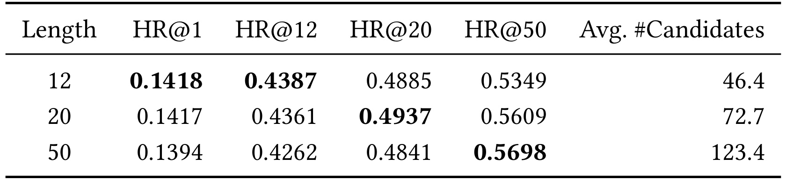
Table 5 固定教师，比较十二、二十和五十项蒸馏目标。十二项目标的 HR@12 最高，为零点四三八七；二十项目标的 HR@20 最高，为零点四九三七；五十项目标的 HR@50 最高，为零点五六九八。目标变长没有统一改善所有截断：从十二增至五十，HR@1 从零点一四一八降到零点一三九四，HR@12 从零点四三八七降到零点四二六二。它更像把学习覆盖向深层扩展，而不是无代价地增加每个位置的质量。
平均有效候选数量从四十六点四增至七十二点七，再到一百二十三点四，说明训练目标长度确实能改变学生的输出范围。但有效数量仍不等于目标长度，也不等于所有生成 token 都有效；模型可以在训练目标之外续写，最终经过映射和去重保留不同数量。对服务而言，更多候选可能增加后级排序负担，长目标也会增加离线搜索和学生训练开销。论文没有将这些数量换算成相同墙钟预算，因此不能把五十项目标直接认定为成本最优。
作者据此提出，当主要关心某个截断时，构造相近长度的目标通常已经足够，并在主实验中使用二十项支持较广评价。这个选择来自本组有限长度对照，不是所有数据集通用的定律。实际目标还取决于候选相关性衰减、列表长度上限及下游需要；若业务只评估首位，更多离线候选甚至可能稀释关注。评价目标应先确定，再决定搜索预算与蒸馏序列长度，不能因为构造更多目标方便就假定收益持续单调。
长度实验还没有给出不同目录更新频率下的目标重建费用。假如物品很快失效，更长缓存列表包含的过时候选可能更多；因此离线成本不能只按一次构造估计，还应结合目标在实际业务中的可用周期。
3.3 候选集合、顺序与模型扩容
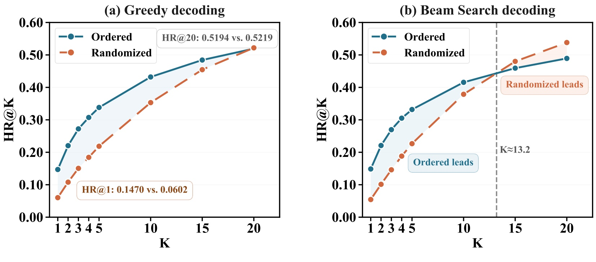
Figure 4 只把每份目标内部的物品随机重排，候选集合保持不变。左侧贪心曲线显示，按教师分数排序时首位命中为零点一四七零，随机顺序只有零点零六零二；但深度二十命中分别为零点五一九四与零点五二一九，几乎相同。这支持把候选覆盖和输出排序分开理解：相同集合能够保留较深覆盖，却没有教会模型把更相关物品先生成。与之对应，NDCG@20 从零点三零一零降至零点二二七一，说明仅看最终集合命中会漏掉明显的排序损失。
右侧是相同目标变化对 beam 的影响，随机顺序在较深截断反而领先有序目标。作者推测随机化把首位置监督分散到更多候选，使首物品分布更平，从而让 beam 更容易访问较低排名物品；这仍是机制解释而非独立因果证明。两幅图共同说明目标顺序应与部署解码方式匹配，有利于贪心列表的顺序未必最有利于物品搜索。不能从随机重排保住深度二十命中推断顺序无用，也不能把它的 beam 改善当成列表生成改善。
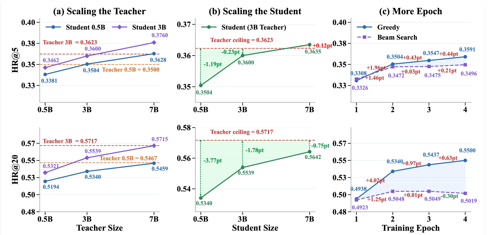
Figure 5 的三列分别改变教师大小、学生大小和重复训练轮数，纵向观察第五与第二十位置命中。左列固定学生，教师从五亿扩大至七十亿，质量持续提高；三十亿学生由七十亿教师蒸馏后，HR@5 达到零点三七六零，高于直接训练三十亿参考的零点三六二三，同时较深命中接近。中列固定三十亿教师，学生从五亿扩到七十亿，HR@20 与教师的差距由三点七七个百分点缩至零点七五个百分点，说明学生容量影响它吸收相同目标的能力。教师足够好不代表小学生能无损复现全部深层覆盖。
头部与深层的转移难度也不同。七十亿教师的五亿学生在 HR@5 已接近直接训练三十亿模型，但 HR@20 仍为零点五四五九，低于后者零点五七一七。因此“学生匹配大模型”必须带上截断指标，不能由头部一个点外推整份列表。右列重复使用相同蒸馏数据，贪心 HR@20 从第二至第四轮又增加一点六个百分点，beam 则大致饱和且后期略有回退。训练轮数增加的是优化预算，不是新的离线样本量；若把二者统称数据扩容，会错误估计教师搜索成本。
这三列给出不同成本交换。教师扩容不改变在线学生，但增加教师训练与构造目标成本；学生扩容可能提高吸收能力，也增加在线部署负担；多轮训练复用已有目标，却延长学生训练。论文没有给出统一 GPU 时间或总成本轴，所以不能由曲线选择全局最便宜方案。图中部分参考线是不同容量模型的直接训练结果，比较需要明确哪个维度固定，不能将所有高点拼成一个同时实现的配置。
3.4 后续强化学习与监督重排的边界
作者进一步比较物品级与列表级强化学习。两种设置都采样 rollout，效率奖励来自内部评分服务的点击率与转化率乘积；列表设置先把多条回答中的语义码去重，形成同请求的候选集合，再在集合内标准化物品奖励。
符号解释：$s$ 表示一个语义码物品，$r(s)$ 是内部服务给出的效率分数，$\mu$、$\sigma$ 是本请求有效候选奖励的均值与标准差，$\epsilon$ 防止分母为零。列表中每个物品对应的 token 接收自己的优势，不是整条列表共享同一标量；重复出现的物品不再接收效率优势，并在末 token 受到负优势惩罚。这里的“列表级”描述条件轨迹，奖励信用仍细到列表中的物品。
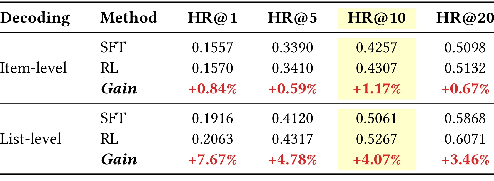
Table 6 分别将每种设置的强化学习结果与自身监督微调起点比较。物品设置 HR@10 从零点四二五七到零点四三零七，相对增加百分之一点一七；列表设置从零点五零六一到零点五二六七，相对增加百分之四点零七。各截断列表增益为百分之三点四六至七点六七，物品为百分之零点五九至一点一七。表里的 Gain 是相对百分比，不是百分点，更不是相同模型重复训练的墙钟加速。
两组监督起点本来不同，列表初值在所有所列截断都更高，且列表额外使用重复惩罚。因此可以说在各自实验协议下，列表设置从后续强化学习获得更大相对收益；不能把两组差值直接视为仅改变 rollout 粒度后的严格因果隔离。内部效率服务的估计误差也可能传入奖励，离线命中增加没有证明真实点击、转化或多样性同步改善。论文动机提到列表目标，但该表没有直接提供多样性指标。
附录的逐物品信用分配尤其值得保留：同一列表内可能同时有正负优势，避免只因整体平均好就鼓励其中所有物品。它仍然依赖同请求候选集合的奖励分布，采样候选范围变化会改变标准化基准。复现时需同时保存候选去重规则、无效评分处理、重复惩罚以及优势归一化范围，不能只实现一个整列表奖励平均就称作同一方法。本文提供的是后续策略优化的可用接口，并非证明所有列表级业务目标已被统一解决。
特别是列表奖励在同请求去重集合内标准化，增加一条采样列表可能改变其他物品的相对优势；它不是每个物品拥有一个与采样无关的固定标签。实现和消融都需要保存这一动态比较集合，否则无法对应表中的优化设置。
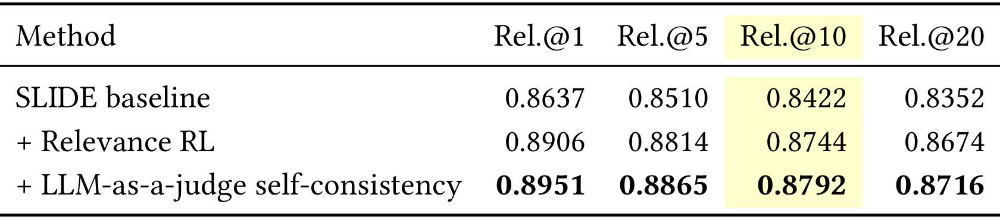
Table 7 把目标从效率评分换成相关性。SLIDE 基线的 Rel.@10 为零点八四二二，相关性强化学习达到零点八七四四，增加三点二二个百分点；进一步加入语言模型评审的自一致性项后为零点八七九二，再增加零点四八个百分点。其他截断也有同向变化，例如首位由零点八六三七提高到零点八九零六，再到零点八九五一。这说明列表生成结构可以接入另一类奖励，不必只围绕命中已转化物品优化。
相关性的来源是内部相关性团队开发的模型，而非本表直接报告的真人盲评。评审自一致性也只是奖励组成，它没有在这里被证明等价于真实相关性或用户满意度。若评估模型与奖励模型的偏好接近，优化后分数可能提高而外部效用变化更小；论文没有给出足够独立标注或误差切面来排除这种风险。因此这些数值应描述为该内部评价体系下的改善，不能写成线上相关性收益或通用搜索质量提升。
这项实验与主表还使用不同指标，Rel.@K 不应与 HR@K 相加或求一个统一平均提升。前者评价返回结果的相关性打分，后者检查目标物品是否命中，回答的是不同问题。若用于实际检索，应同时关注新候选质量、已知转化覆盖和人工可解释错误，避免训练只顺应单一评分器。表中没有置信区间或评审偏差分析，当前证据的价值是证明奖励替换具有可操作性，而不是给出可直接迁移的增益幅度。
此外，自一致性项后的额外提升小于首次相关性强化学习的提升，不能只选最终分数把两阶段贡献混为一体。若要评估这个附加项，需固定基础策略、采样量和评审器版本，并报告其新增调用成本。
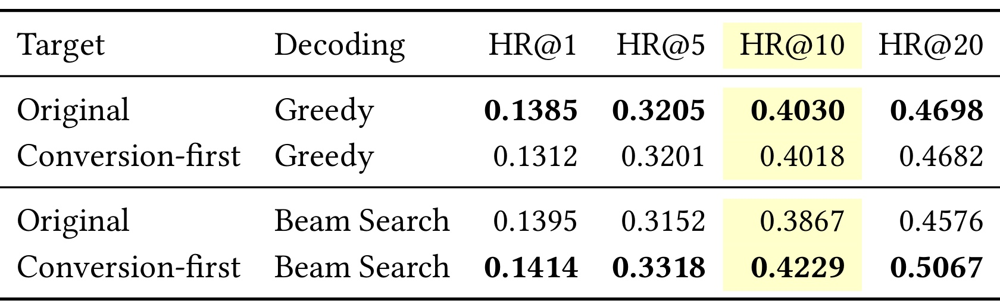
Table 8 对学生目标做正例前置：若转化物品已在教师列表中，将它移到第一位，否则插入第一位，其余物品保持相对顺序。只有约百分之六十的原教师目标包含真实转化物品，因此这个操作既改变顺序，也可能改变集合。贪心 HR@10 从零点四零三零降为零点四零一八，HR@1 从零点一三八五降为零点一三一二，其他截断也略降；beam HR@10 却从零点三八六七提高到零点四二二九，HR@20 从零点四五七六提高到零点五零六七。相同目标修改对两种解码产生不同影响，直接反驳正例前置应无条件用于全部阶段的推论。
作者解释为首位正例监督更贴近物品级搜索使用的初始上下文，却未必帮助连续列表生成保持教师排序。这个解释与 Table 4 教师阶段的收益一致，但仍需更细的集合和顺序控制：当前操作在转化物品缺失时同时增加一个物品，不能只归因为重排。另一个重要限制是这些结果在训练尚未收敛时获得，属于中间阶段对照，不能当成最终收敛性能或永久退化的证明。
这张表提醒我们，教师输出中不包含已观测转化物品并不自动意味着蒸馏失败；教师在重建一个更广检索分布，而学生目标需要在头部排序、覆盖和跨项依赖之间取舍。但不能反过来说忽略真实转化一定更好，尤其当奖励或业务价值依赖稀少高价值事件时。可复现实验应分别比较只移动已有正例、只补入缺失正例以及不同优化阶段的变化，才能判断当前反例来自首位偏置、集合变化还是优化尚未完成。
4. 总结
本文把标签重建与在线解码联系起来，同时也暴露了二者并不一致的地方：教师需要首物品分布支持搜索，学生却要维护连续列表的条件关系。这解释了为何相同正例前置操作在两种阶段可能产生相反结果，也提示评估应与最终部署路径相匹配，不能只根据教师指标决定所有训练设计。
SLIDE 最清晰的贡献是把离线搜索输出转成适合在线列表生成的监督，而不是仅把教师缩小。教师在物品级搜索中找到多个候选，学生在一个有序序列里学习依次生成它们；教师规模可以增大，在线学生保持固定。实验说明候选集合与目标顺序都重要，并且在两套数据上，强教师确实能让小学生超过相同部署尺寸的直接训练 beam 参考。不过同尺寸教师仍有残余差距，这一结果不能被更强教师的最好数字盖过去。
对推荐与搜索系统，较直接的迁移价值在于把已有昂贵检索过程用于训练数据生产。若系统已经有稳定的语义码映射和较好的教师，可先固定在线学生，分别核验教师质量、目标长度和目标顺序，再判断学生是否真正吸收了搜索知识。对个性化语言模型，这也提供了一种把多分支候选组织成单序列目标的思路，但本文没有验证一般文本问答、工具规划或用户记忆任务，迁移需要重新界定候选、合法性和列表价值。
至少有五项边界不能忽略。第一，离线教师搜索和三阶段训练增加资源与迭代复杂度，目录变化可能使目标过时。第二，单轨迹仍有多次自回归前向，长列表错误累积、重复和无效码可能抵消分支减少的收益；文中没有墙钟或线上实验。第三，FORGE 的原始单标签使直接贪心基线天然缺少列表监督，较大提升不能全部解释为搜索蒸馏。第四，淘宝数据与内部精排、效率、相关性评分服务不公开，完整复现依赖私有条件。第五，教师候选仍继承既有曝光与排序偏差，广目录搜索没有被证明消除了这些偏差；当前结果也没有足够多种子或区间支持跨设置稳定性。
有效候选数量和小截断准确率需要共同评价。主表学生通常只返回几十个合法唯一物品，而 beam 接近二百；在命中前十有优势，不保证下游召回规模已经满足需求。相反，更多输出也可能增加后级排序成本，而不是纯粹增加价值。若产品要求精确列表长度，就应报告不足率、填充策略和这些策略对相关性的影响，不能只用平均数量代替尾部风险。作者局限也明确指出当前侧重直接列表生成，不应把它外推为所有规模召回链路的成熟替代。
后续验证可按三个阶段开展。先固定训练量、标签和停止点，比较原始列表、教师候选随机序与教师排序，分离集合与顺序，避免把更多训练轮数混入机制收益。再固定硬件与全链路延迟，比较相同有效候选数量下的贪心和 beam，并把教师目标生产、学生训练与线上成本分别记账。最后扩大数据与种子，检验码本更新、兴趣变化和长尾物品的失效模式，同时用独立相关性判断复核内部奖励改进。只有这些条件补齐，才能决定该方案在具体服务中值得投入多少离线搜索预算。